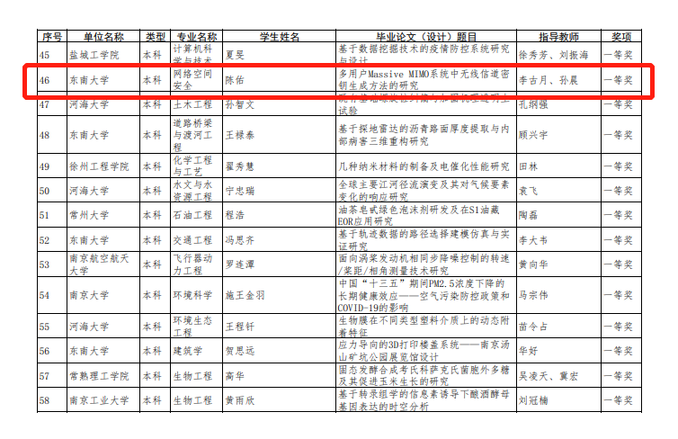

多用户Massive MIMO系统中无线信道密钥生成方法的研究
荣获奖项
2021年度江苏省普通高校本专科优秀毕业论文（设计）
关键技术
Massive MIMO
近年来移动数据业务曩呈现几何指数增长.在可预测的未来我们急霞能够潢足更亮的传输速夹.更大的费宽容曩和更低延时的无线通信系统。而相比较第四代(4G)，第五代(5G）移动通信需要在无线传输上取得突破性创新，以实现频谱效率和功率效率提升10倍以上的目标，其中，Massive MIMO(大规模天线技术.亦称为Large Scale MIMO)是第五代移动通信(5G)中提高系统容量和频谱利用率的关键技术。
无线信道密钥生成
尽管无线通信在军事和民用都发挥着不可替代的作用，无线媒介的广播特性也使得传输的可靠性和安全性面临严峻考验.传统的解决方法是在网络层通过公私密钥对数据进行加密，然而在动态的无线网络中，对称加密方法也面临着密钥分发的问题.与此同时，在日益兴起的无线传感器网络中，由于资源有限或者缺乏密钥管理设施,传感器节点无法负担非对称算法的高功率和高成本的开销.此外，传统的加密方法大多只停留在现有有限的计算资源无法在秘密信息的有效期内对其解密的基础上，并没有在数学上进行证明.随着量子信息时代的到来，尤其是拥有迅速执行巨量复杂的因数分解能力的量子计算机的出现，很多传统的加密方法将不再可靠.因此，人们亟需寻找一种可以从理论上牢不可破，同时在实际应用中开销合理、切实可行的安全机制.